CKAD Note Section 3 Configuration
Contents
37. [Pre-Request] Commands and Arguments in Docker
課程一開始就先來複習 Docker File 當中的 CMD 與 ENTRYPOINT，雖然講師說不在 CKAD 的考試範圍，不過 CKAD-2021 (即將在 2021 Q3 改版) 看起來是有被納入的喔~
Docker 官方文件有小實驗與列表可以參考
Docker official docs-Understand how CMD and ENTRYPOINT interact
當我們執行
|
|
隨即查看 docker running process (docker ps) 會發現 test 這個容器實例並不在 running 狀態。接著列出所有 container (包含 not running) docker ps -a 則會發現 test 處於 Exited 狀態。
container 不像 VM 一樣需要維持 OS 運作，當手上沒有需要「存活」的任務時就會退出 running status => Exit
CMD 和 ENTRYPOINT 的作用就是定義 container 裡面需要執行什麼任務。 (可以去找 Docker file 閱讀)
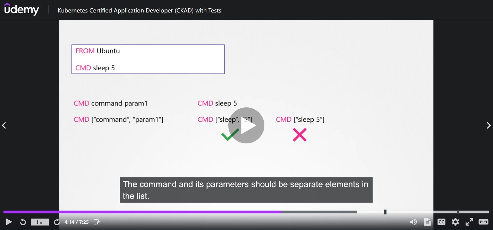
▲ CMD 有兩種格式: shell format, JSON format。
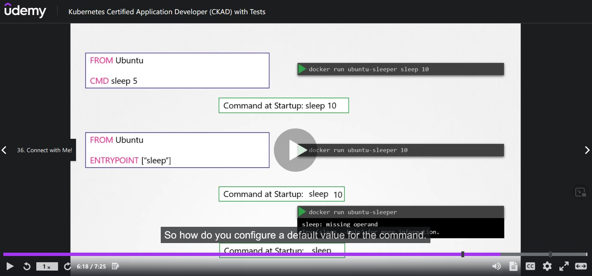
▲ ENTRYPOINT 的作用。
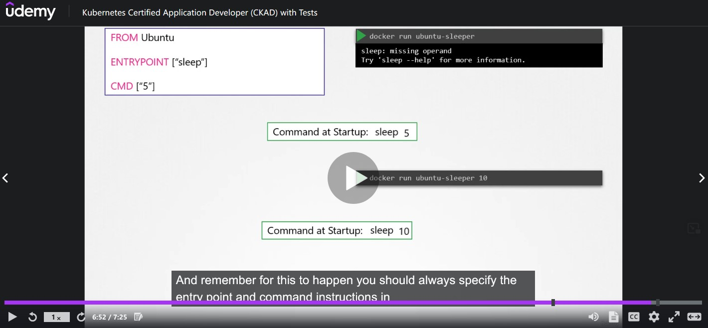
▲ CMD ENTRYPOINT 同時使用
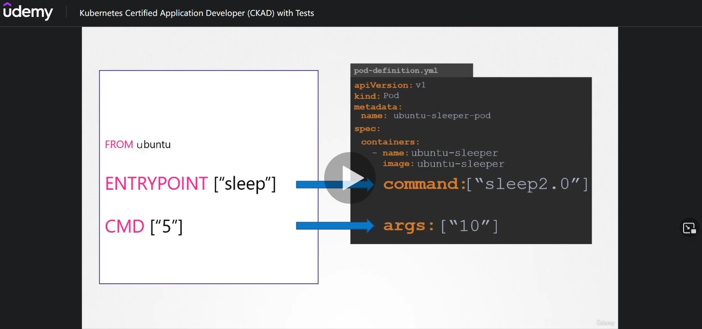
▲ 兩者應對關係
42. Enviroment Variables
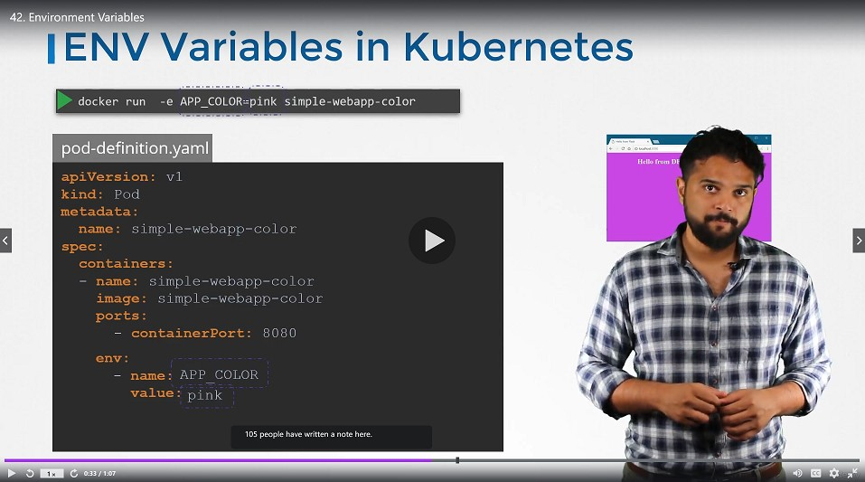
▲ env 被放在 .spec.containers.env。 而且是個 array。透過 kubectl run -e <key>=<value> 可以快速加上環境變數
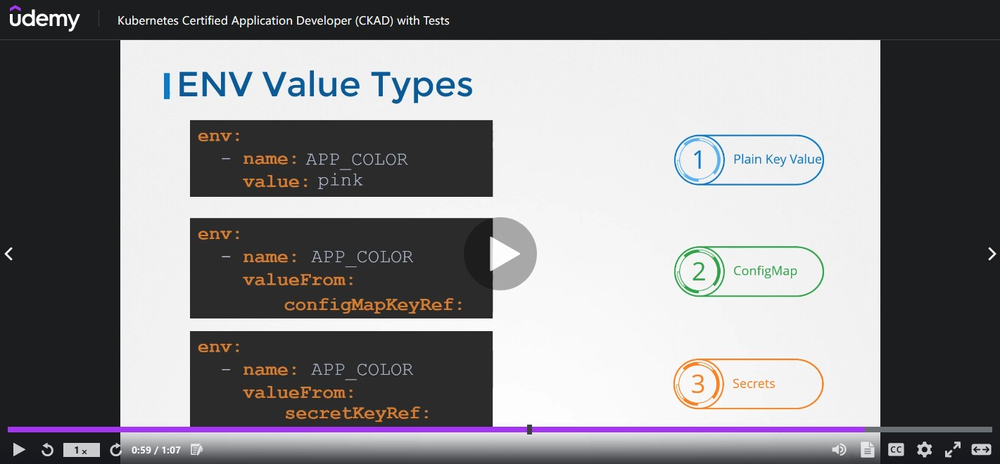
▲ env 總共有三種類型: plain key-value, configMap, secret
如果把 env 散落在每一個 YAML 裡面會變得不好管理，configMap 就是為了中央化管理而誕生。
BTW~ 在 kubectl CLI 的世界裡面有兩種創建元件的方式: 1. Imperative (命令式) 2. Declarative (宣告式) (不確定考試是否會要求 2022.04.28 更新: 不會)
[ithelp]Buzz Word 1 : Declarative vs. Imperative
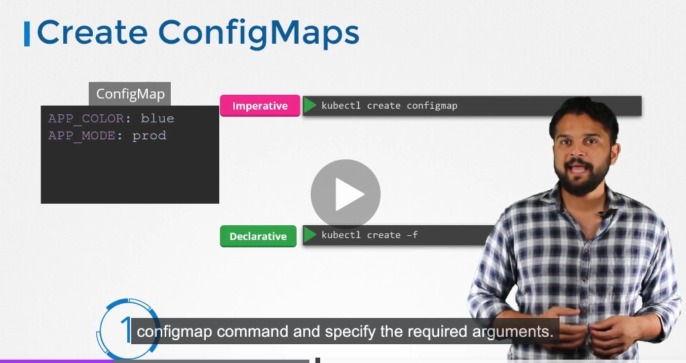
Imperative way
|
|
configMap file 的內容可以參考 [kubernetes.io]Configure a Pod to Use a ConfigMap (其實就是每一行一個 key-value 啦)
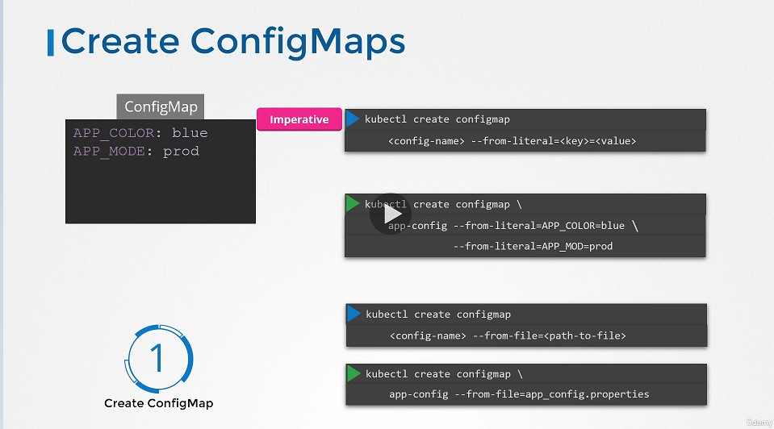
Declarative way
把 spec: 換成 data:
|
|
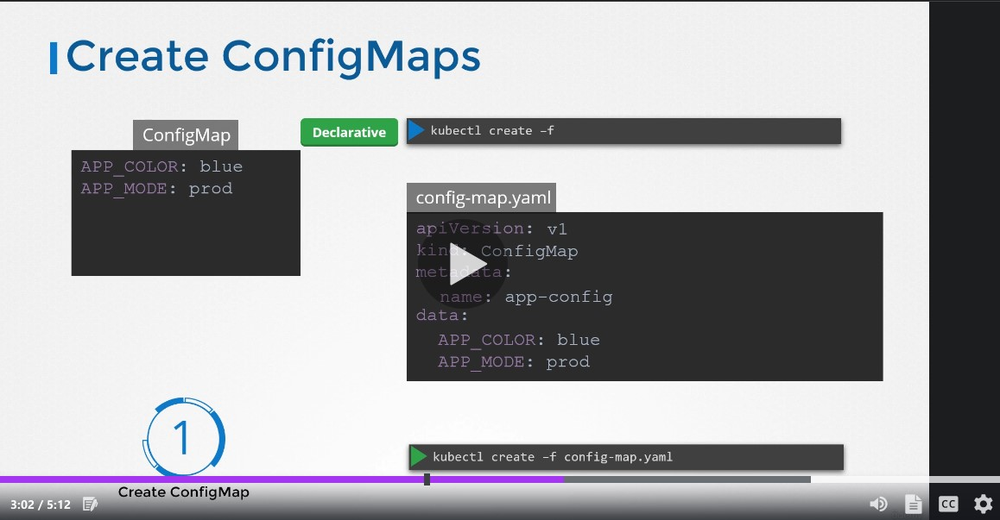
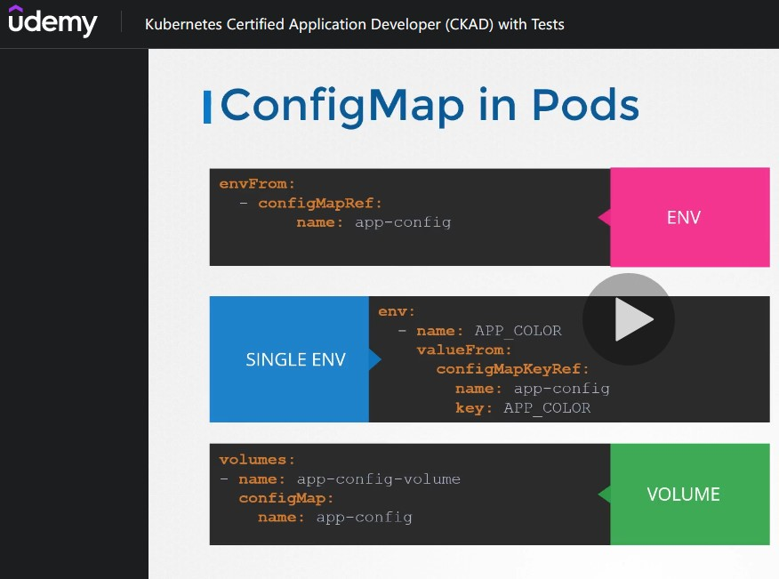
▲ 將整個 ENV file inject 到 pod、將 ENV file 的 某個 key-value inject 到 pod、用 volume 的方式掛載 configMap
解題技巧
2022.04.28 考試時建議直接開 bookmark 看語法就好，這個方法會比較慢
|
|
|
|
為什麼要 --recursive 呢? 因為 預設輸出並不會展開每一個欄位裡面的細項，因此會找不到我們要的 envFrom
搞剛一點可以 kubectl explain pod.spec.containers.envFrom (JSON path) 去看
secret
|
|
|
|
可以看到預設 value 都是以 Base 64 encode (編碼) 不是加密!!
|
|
|
|
47. A quick note about Secrests
這邊主要介紹如何 encrypt “secret” in K8s & K8s 本身運作 secret 的機制。
- secret 只會單向傳輸到 pod 所在的 node 身上
kubelet儲存 secret 在 tmpfs，而不是 disk- 當 pods 不再需要某個 secret，
kubelet會刪除 local tmpfs 內的 secret
50. Docker Security
Docker 預設在 container 內使用 root 來執行 process，這個 root 跟 host root 不一樣，是權限有被限縮的 root。
下圖是 Linux root 所有 root 的超能力 (capabilities)，在 /usr/include/linux/capability.h 有定義。
在 docker run 的時候可以 1. 更改使用者 PID (–user 1000) 2. 增減 root 超能力 docker run --cap-add MAC_ADMI ubuntu
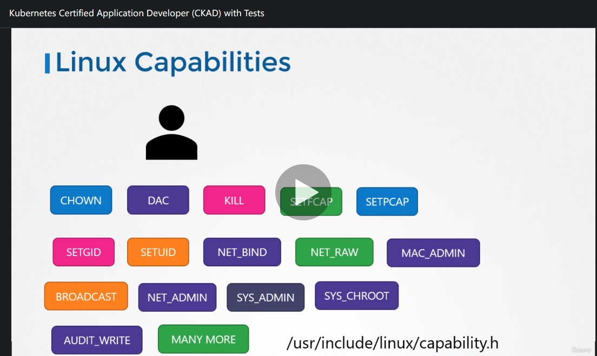
51. Security Contexts
在 Kubernetes 裡面定義前面 docker 提到的 security。可以選擇定義在 pod 裡面 (pod 內所有 container 都會被套用) 或者單一 container 裡面
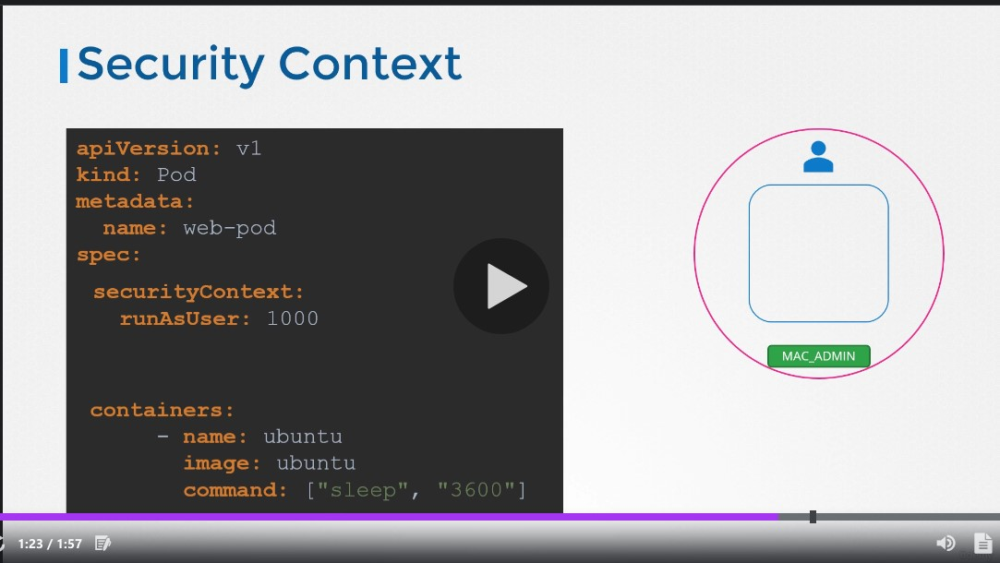
▲ 定義在 pod 內
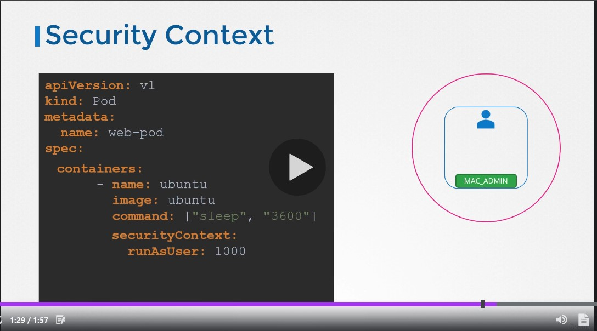
▲ 定義在 container 內
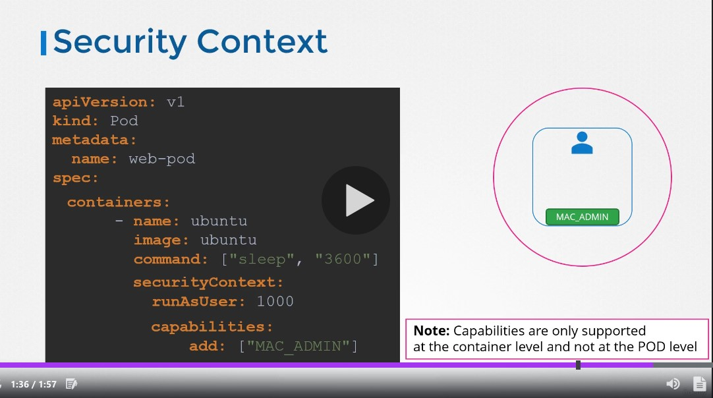
▲ Capabilities 只能定義在 container 內
53. Service Account
在 Kubernetes 中有兩種帳號， User Account 與 Service Account 前者給人用，後者給 “非人” 使用 (洗咧公鯊小)
通常是給 Application 使用，例如: 負責監控 Pod 的 Prometheus。
Prometheus (普羅米修斯) 需要跟 Kubernetes API 互動來獲取 pod 資訊，所以需要一組 Service Account
每個 namespace 都會有一組名為 default 的 Service Account
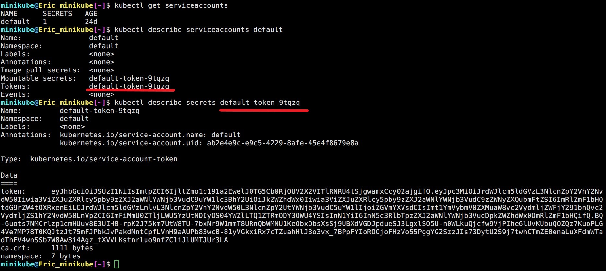
curl 範例:
|
|
default Service Account 預設會 auto mount 進 pod 裡面
|
|
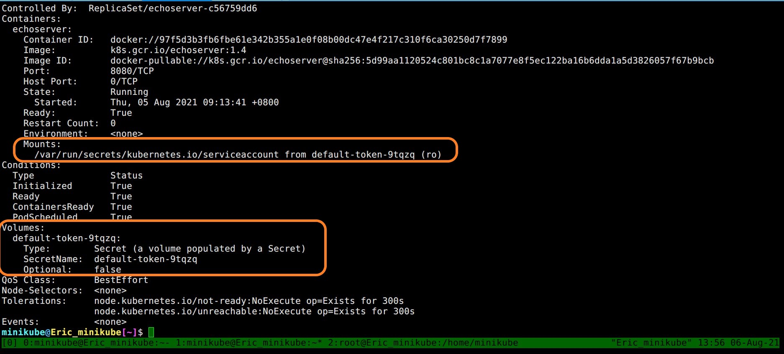
|
|
Deployment (練習 LAB 考題)
|
|
56. Resource Requirements
Managing Resources for Containers
scheduler 會針對使用者給定的 request 去分配這個 pod 應該去哪個 node
YAML 路徑
spec.containers[].resources.limits.cpu
spec.containers[].resources.limits.memory
spec.containers[].resources.limits.hugepages-<size>
spec.containers[].resources.requests.cpu
spec.containers[].resources.requests.memory
spec.containers[].resources.requests.hugepages-<size>
範例:
|
|
只有設定 limit (上限) 而沒有設定 request (需求) 的情況下，Kubernetes 會自動 request == limit
> (錯的! 請看 57.) Kubernetes 預設分配 0.5 CPU 與 256 Mi memory 到每個 pod (CPU 單位最低是 1m == 0.001， 若設定成 1 代表 1 vCore)
> Kubernetes 會自動調節 CPU usage 讓 CPU 使用率不超出我們設定的閥值，不過 memory 並不會! 當 memory 吃超過 limits 這個 pod 將會被消滅 (terminate)
57. Note on default resource requirements and limits
|
|
Yes! 沒有設定的話就是用多少吃多少。
58. Practice Test - Resource Requirements
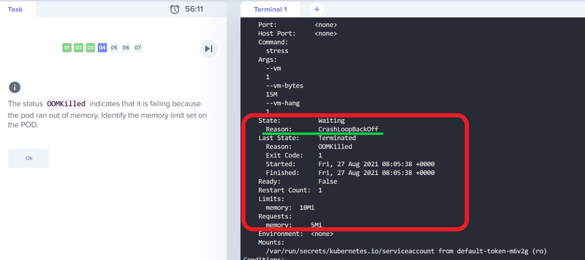
▲ 如果 kubectl get pod 看到 status 是 CrashLoopBackOff 的話 原因 (reason) 不是這個!!
請用 kubectl describe pod <pod_name> 下去看
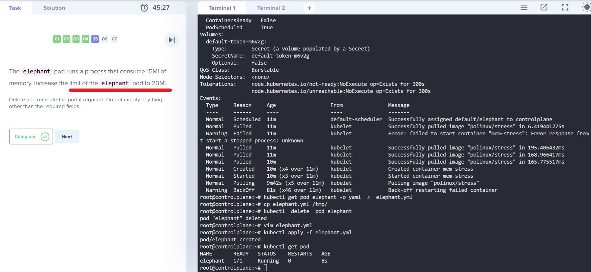
▲ 調整 pod resources 必須砍掉重練。
59. Taints and Toleration (汙點 與 容忍度)
這兩個是影響 scheduler 調度/指定 (下一章節要討論的 node affinity 才能夠指定 node) pod 的機制。 我們會將 worker node 設定 taints；對 pod 設定 toleration。
Taint to a worker node
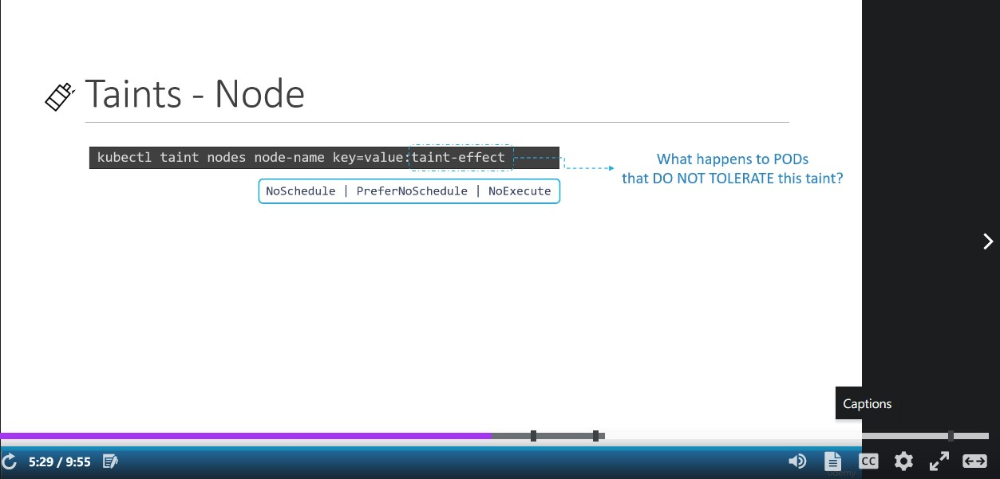
透過 kubectl taint <NODE> <NAME> key=value:<taint_effect> 可以將 worker node 「汙點」。
<taint_effect> 定義了當 pod 不能忍受 (not tolerate) 時 觸發 scheduler 的策略
其中 <taint_effect> 的部分有三種: 1. NoSchedule 2. PreferNoSchedule 3. NoExecute
NoSchedule: 從此以後不符合資格的pod將不會被scheduler調度過來。 不朔及既往PreferNoSchedule: 小橋流水人家….不要! 但接受內地的 「word 很大，你忍耐一下」 「我叫你吹!」 (兩個都是內地沒毛病)NoExecute: 不符合資格的pod將不會被scheduler調度過來。 會朔及既往
範例:
|
|
Tolerate a pod
假設我們對 node1 執行 taint 如下:
|
|
那要讓某個 pod 適應 node1 的 YAML 會就長這樣 ↓ (註: 如果 operator 是 “Exist” 的話 value 不用被宣告。)
|
|
注意!! 每個 tolerations 底下的 value 都必須要加 "xxxx" 而且 operator: "xxx" 是必要的
★ 觀念澄清!! 在 Taint and Toleration 當中 我們只是讓 node1 可以接受 「大奶微微」(taint the node)，但絕對沒有保證 「大奶微微」一定會被 放置/調度 在 node1 喔!!
另外 master-node 也是透過 taint 來達成排擠非系統 pod 的目的。

▲ minikube 貌似沒有加 XDD 不過正常應該會看到 Taints: node-role.kubernetes.io/master:NoSchedule 啦~
62. Node Selector
Node Selectors 提供一個比較簡單的方式來讓使用者指定 pod 放到哪個 worker node。
兩個步驟: 1. Label a node 2. add to YAML
Label a node
|
|
add ’nodeSelector’ to YAML
範例來源: [kubernetes.io] Assigning Pods to Nodes
|
|
Node selector 的限制
先假設我們有四個 node node{1..4}:
node1: size: large
node2: size: small
node3: size: small
node4: size: medium
Node selector 沒辦法做到條件判斷! 例如:
size: arge OR size: medium
NOT size: small
這個時候就需要 Node Affinity 了~
Node Affinity
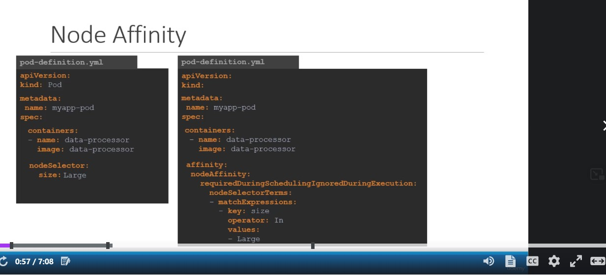
▲ 因為多了 operator 可以做判斷式。
operator 可以是 In, NotIn, Exists (常用) 其中 Exists 只判斷是否有這個 key 而不用給定 value。
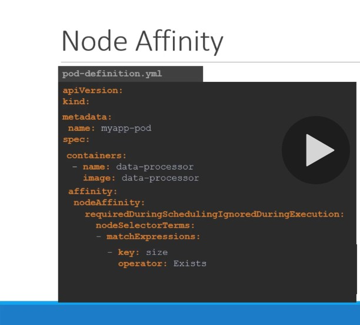
|
|
|
|
本章節只會用到 nodeAffinity 的部分~
|
|
|
|
nodeAffinity 分為兩種 rule: preferredDuringSchedulingIgnoredDuringExecution 與 requiredDuringSchedulingIgnoredDuringExecution 有夠長
看起來很長，不過實際上只有前面不同: preferred 和 required，官方在未來有考慮增加 required ... required...。
來解釋一下差異~
什麼時候會觸發 DuringScheduling 呢? Ans: 使用到 master node 的 scheduler 時。 例如: 新增 pod
什麼時候會觸發 DuringExecution 呢? Ans: 破壞到現有條件時。 例如: un-label 某個 worker node，而這個 worker node 上面的 pod 有設定這個 label
不過目前 nodeAffinity 對於 DuringExecution 都是 Ignor。換句話說就是不會因為 K8s admin un-label 了某個 node 而觸發 pod 被調度到其它 node 身上，或者讓 pod 完全沒有容身之地造成崩潰。
preferred (偏好), required (要求) 應該非常好理解。假設 worker-node 忘記 label 了，前者一樣可以被調度安置；後者就會讓 pod 處於 pending 狀態喔~
Tips: 查詢 worker-node 身上的 label -> kubectl get nodes <node> --show-labels
63. Taint and Toleration / Node Affinity 比較
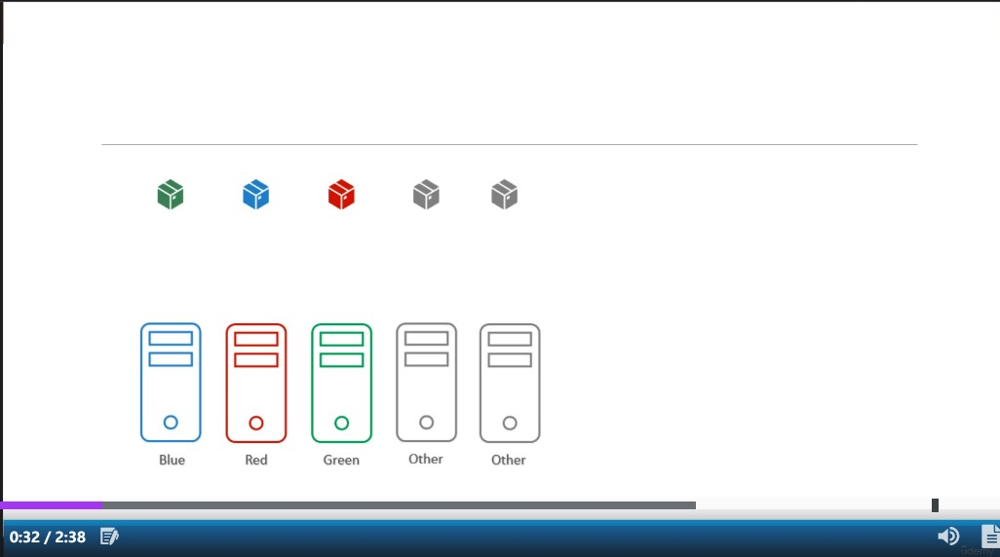
▲ 我們的目標是將同顏色的 pod 放到同顏色的 node 上 AND 灰色 pod 不會被安放到彩色世界。
- Taint and Toleration: 可以保證 node 上只有正確的
pod，但不能保證彩色的pod不會被丟去灰色的 Other (worker-node)!
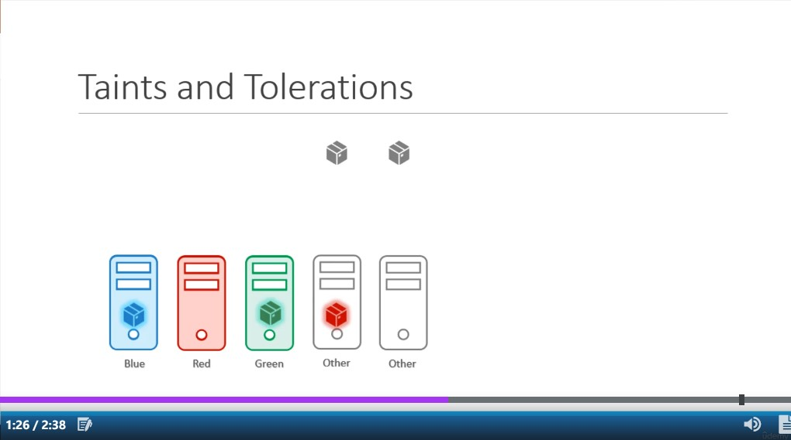
▲ Red pod 有機會被放置到 Other worker-node 身上。
- Node Affinity: 可以保證彩色的
pod只能被放在彩色的 worker-node 身上， 但不能保證灰色的pod不會被丟去彩色的 worker-node 身上!
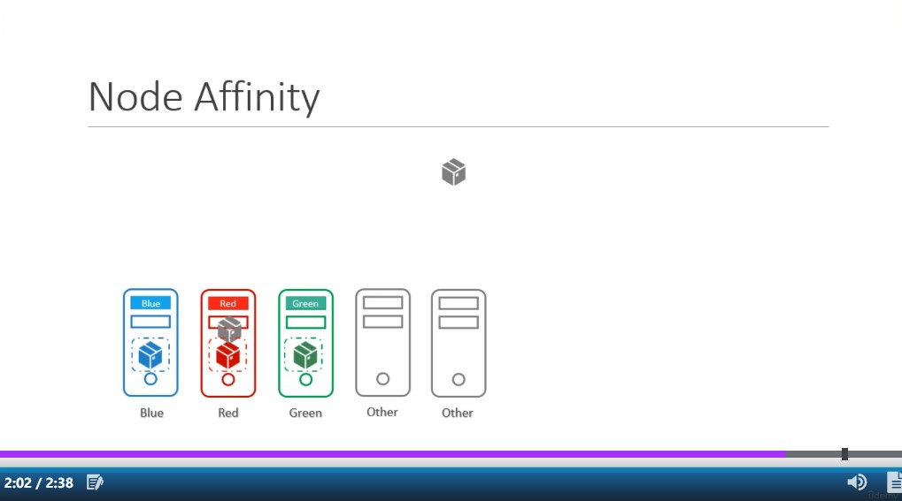
▲ Gray pod 有機會被放置到彩色 worker-node 身上。
因此同時使用兩個政策即可達成目的!
65. Certification Tips
這邊講師列了三篇考試心得與小技巧~
-
-
千萬不要手刻整份 YAML!!
kubectl run,kubectl create ... --dry-run=client -o yaml > def.yml -
善用
alias(我大概只會用兩個alias kk='kubectl',alias kkr='kubectl -o yaml --dry-run=client') -
~/.vimrc(本人不使用)1 2 3 4 5vim ~/.vimrc set nu set expandtab set shiftwidth=2 set tabstop=2
1 2 3 4 5## 2021/11/22 新增 (不用死記，進去 vim tab 的出來) ## 新增之後就不用拿尺對 YAML file 了! set cursorcolumn set cursorline
-
使用考場 (網頁) 提供的 note pad 記下題號與佔分，如果你要跳題的話
-
Author 老柯
LastMod 2022-05-06 (be577e0)